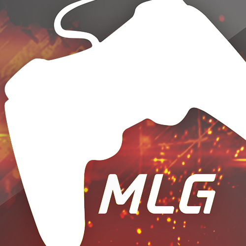

The Rise of Competitive Gaming

Competitive gaming has existed almost as long as video games themselves. Even the earliest arcade games inspired some fierce competition. Early on, a lot of that competition took the form of friends challenging each other to best their high scores, but it didn't take long for organized tournaments to begin popping up.
Atari held the first video game competition, the Space Invaders Tournament, in 1980. It attracted more than ten thousand participants. This tournament, and others like it in following years, sowed the seeds of what would eventually become eSports.
The 1990s saw the rise of PC gaming, and along with this came the first true eSports competitions. 1997's Red Annihilation tournament for the first person shooter (FPS) "Quake" is widely considered to have been the first real instance of eSports, drawing over 2,000 participants. The winner received a Ferrari previously owned by John Carmack, lead developer for "Quake." Major League Gaming (MLG) launched in 2002 and is now the largest and most successful of the eSports leagues, featuring numerous games in a variety of genres - from shooters to real-time strategy (RTS) games - and offering lavish prize pools.
MLG was also the first tournament to be televised in North America, with a 2006 "Halo 2" series being shown on the USA Network, though it did not succeed in establishing a major television presence over the long haul.
These days MLG, like most eSports tournaments, is primarily viewed online, though it draws huge numbers. The 2012 spring championship brought in over four million viewers, even beating "real" sporting events, like the 2012 NBA All-Star Game, in certain key demographics.